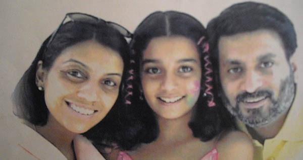

Join the initiative now
Isn't aarushi talwar case a classic example of trial by media? And how everything went wrong? Media is not anyone’s sympathiser. Conspiracy creates sensation, views and conversation.
The mark on the neck is not slanted upwards like it should have been instead he appears to have been strangulated.
A widely-discussed social media post claimed that a person who can support his body weight with his hands cannot die by hanging. In the tweets, which are now deleted, the person said that the “ring along the neck is not slanted. No saliva outside mouth, tongue and eyeball normal they are not out ” According to the post, “there were only 3 people in the house and all three said that Sushant was hanging with the help of curtain. But the mark made on his neck is of a plastic rope
Disha Salian Death: Sushant Singh Rajput’s Ex-Manager Dies of ‘Accidental Falling’ From High-Rise Building, Was also Suffering From Depression? (Fell off the window of the apartment at 1AM and police informed at 2:25AM)
Sushant Singh Rajput had donated a sum of Rs 1.25 crore towards Nagaland flood relief in 2018. He made a similar donation towards Kerala flood relief the same year.
Our voices are falling on deaf ears.We will have to raise our voices harder,stronger,louder before all of us are silenced.What should we do? Join the initiative
If you have any details about case please share it on this email address. please don't flood the mail with spam mails please send mail once.
justice4sushantsinghrajput2020@gmail.com